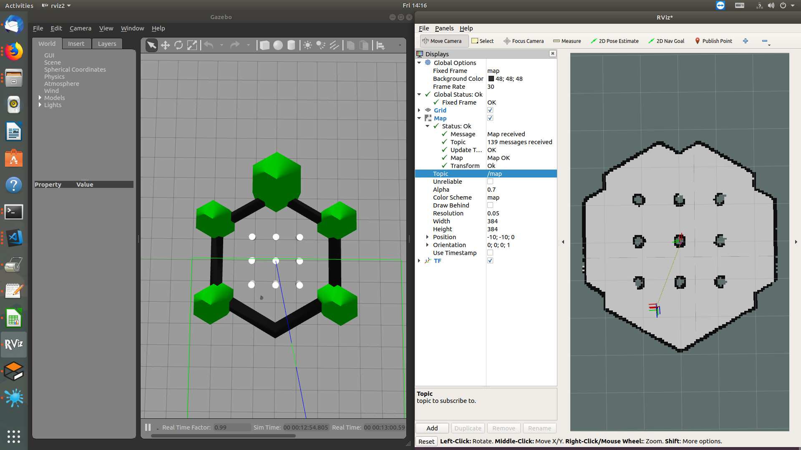

Navigation2¶
1. Overview¶
The ROS 2 Navigation System is the control system that enables a robot to autonomously reach a goal state, such as a specific position and orientation relative to a specific map. Given a current pose, a map, and a goal, such as a destination pose, the navigation system generates a plan to reach the goal, and outputs commands to autonomously drive the robot, respecting any safety constraints and avoiding obstacles encountered along the way.
2. Running the demo¶
The nav2_bringup package is an example bringup system for
navigation2 applications.
Note
OS Requirements: Ubuntu 18.04 It is recommended to start with simulation using Gazebo before proceeding to run on a physical robot.
2.1 Launch Navigation2 with Turtlebot3 in Gazebo simulator¶
Terminal 1: Launch Gazebo and Rviz2
Example: See turtlebot3_gazebo models for details.
source /opt/robot_devkit/robot_devkit_setup.bash
export GAZEBO_MODEL_PATH=$GAZEBO_MODEL_PATH:~/robot_devkit/rdk_ws/turtlebot3_ws/src/turtlebot3/turtlebot3_simulations/turtlebot3_gazebo/models/
ros2 launch nav2_bringup gazebo_rviz2_launch.py world:=$HOME/robot_devkit/rdk_ws/turtlebot3_ws/src/navigation2/navigation2/nav2_system_tests/words/turtlebot3_ros2_demo.world
view result at rviz2 and gazebo
Terminal 2: Launch Turtlebot3 transforms
source /opt/robot_devkit/robot_devkit_setup.bash
export TURTLEBOT3_MODEL=burger
ros2 launch turtlebot3_bringup turtlebot3_state_publisher.launch.py
Example: See turtlebot3_gazebo for details.
Terminal 3: Launch map_server and AMCL
source /opt/robot_devkit/robot_devkit_setup.bash
# Set the tf publisher node to use simulation time or AMCL won't get the transforms correctly
ros2 param set /robot_state_publisher use_sim_time True
# Launch map_server and AMCL, set map_type as "occupancy" by default.
ros2 launch nav2_bringup nav2_bringup_1st_launch.py map:=$HOME/robot_devkit/rdk_ws/turtlebot3_ws/src/navigation2/navigation2/nav2_system_tests/maps/map_circular.pgm map_type:=occupancy use_sim_time:=True
# TODO: move the map to somewhere else.
- In RVIZ2:
- Make sure all transforms from odom are present. (odom->base_link->base_scan)
- Localize the robot using “2D Pose Estimate” button.
Terminal 4: Run the rest of the Navigation2 bringup
source /opt/robot_devkit/robot_devkit_setup.bash
ros2 launch nav2_bringup nav2_bringup_2nd_launch.py use_sim_time:=True
Terminal 5: Set the World Model and the two costmap nodes
source /opt/robot_devkit/robot_devkit_setup.bash
ros2 param set /world_model use_sim_time True
ros2 param set /global_costmap/global_costmap use_sim_time True
ros2 param set /local_costmap/local_costmap use_sim_time True
Note
- The robot should be localized using the “2D Pose Estimate” button in Rviz2 before enabling
use_sim_time. Otherwise, theros2 param setcommands on the costmaps will hang until that is done. - Setting
use_sim_timehas to be done dynamically after the node are up due to this bug: https://github.com/ros2/rclcpp/issues/595. - Sim time needs to be set in every namespace individually.
- Sometimes setting
use_sim_timea second time is required for all the nodes to get updated. - IF you continue to see WARN messages like the ones below, retry setting the use_sim_time parameter.
[WARN] [world_model]: Costmap2DROS transform timeout. Current time: 1543616767.1026, global_pose stamp: 758.8040, tolerance: 0.3000, difference: 1543616008.2986
[WARN] [FollowPathNode]: Costmap2DROS transform timeout. Current time: 1543616767.2787, global_pose stamp: 759.0040, tolerance: 0.3000, difference: 1543616008.2747
- In RVIZ2:
- Add “map” to subscribe topic “/map”.
- Localize the robot using “2D Pose Estimate” button.
- Send the robot a goal using “2D Nav Goal” button.
- Make sure all transforms from odom are present. (odom->base_link->base_scan)
2.2 Launch Navigation2 on a Robot¶
Warning
To be updated base on turtlebot3 readiness for dashing release.
Terminal 1: Run Micro-XRCE-DDS Agent for OpenCR
cd ~/turtlebot3 && MicroXRCEAgent serial /dev/ttyACM0
Terminal 2: Run Micro-XRCE-DDS Agent for Lidar
cd ~/turtlebot3 && MicroXRCEAgent udp 2018
Terminal 3: Run Lidar application
~/turtlebot3/turtlebot3_lidar
Terminal 4: Launch robot turtlebot3_node
source /opt/robot_devkit/robot_devkit_setup.bash
export TURTLEBOT3_MODEL=waffle
ros2 launch turtlebot3_bringup robot.launch.py
Terminal 5: Run AMCL and Map Server
source /opt/robot_devkit/robot_devkit_setup.bash
export TURTLEBOT3_MODEL=waffle
ros2 launch nav2_bringup nav2_bringup_1st_launch.py map:=/full/path/to/map.yaml
Terminal 6: Run RVIZ2
ros2 run rviz2 rviz2
- In RVIZ2:
- Add components: map, scan, tf, global_costmap, local_costmap Make sure all transforms from odom are present. Localize the robot using
2D Pose Estimatebutton.
- Add components: map, scan, tf, global_costmap, local_costmap Make sure all transforms from odom are present. Localize the robot using
Terminal 7: Run the rest of the Navigation2 bringup
source /opt/robot_devkit/robot_devkit_setup.bash
ros2 launch nav2_bringup nav2_bringup_2nd_launch.py
- In RVIZ2:
- Send the robot a goal using
2D Nav Goalbutton. If nothing happens, first retry localizing the robot using the2D Pose Estimatebutton, then retry sending the goal using the2D Nav Goalbutton.
- Send the robot a goal using
3. Known issues¶
- This stack and ROS2 are still in heavy development and there are some bugs and stability issues being worked on, so please do not try this on a robot without taking heavy safety precautions. THE ROBOT MAY CRASH!
- For a current list of known issues, see https://github.com/ros-planning/navigation2/issues.
4. ToDo¶
- Add additional maps and examples.